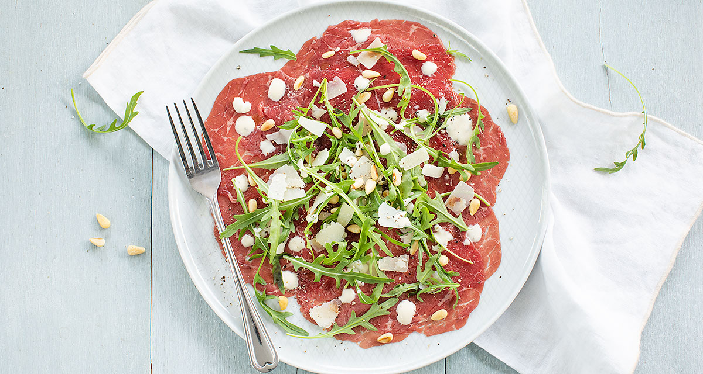

Makkelijk en heerlijk klassiek Italiaans voorgerecht van carpaccio met Parmezaanse
kaas, pijnboompitten, rucola en een heerlijke dressing
Ingrediënten
250 gr dun gesneden ossenhaas / carpaccio
4 eetlepels grof geraspte Parmezaanse kaas
4 eetlepels geroosterde pijnboompitten
Handje rucola
peper en zout
Truffelsaus of truffelmayonaise
Bereidingswijze
Verdeel de carpaccio over 4 borden. Verdeel een beetje rucola er over en garneer met wat
pijnboompitten en Parmezaanse kaas. Bestrooi met een snufje peper en zout en druppel er een
beetje truffelsaus of mayo over.

Tip: Tip: je kunt ook zelf truffelmayo maken door een beetje mayonaise te mengen met
truffelolie en
eventueel een beetje water om aan te lengen.